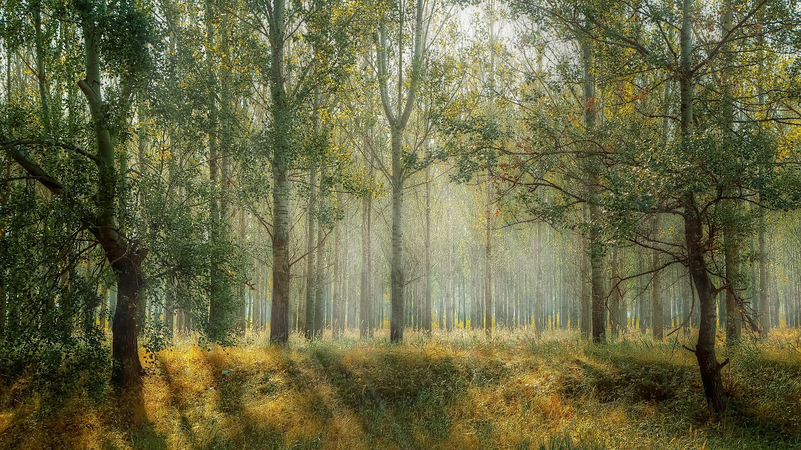
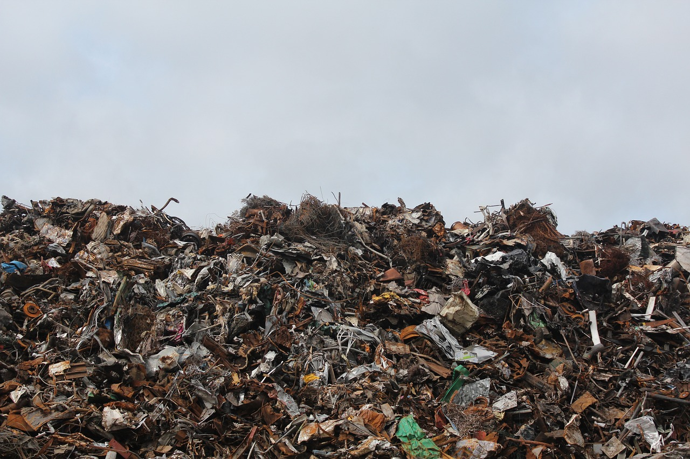

-

私たちにできること
3Rをする
3Rは Reduce（リデュース）、Reuse（リユース）、Recycle（リサイクル）のことです。 Reduce（リデュース）は、製品をつくる時に使う資源の量を減らすこと、Reuse（リユース）は使用済製品等を繰り返し使用すること、 Recycle（リサイクル）は廃棄物等をエネルギー源や原材料として有効に利用することなどです。 不要になったものでも、すぐに捨てるのではなく再活用できないか、リサイクルに回せないかなどを一度考えてみてはいかがでしょうか。
脱炭素化
環境省では、日々のくらしの中で脱炭素化に取り組むことができる30種類の具体的な行動メニューをお示しし、 その中でできることから気軽に取り組んでいただくことを呼びかける、「ゼロカーボンアクション30」を推進しています。 ゼロカーボンアクション30
アクション1では再エネ電気への切り替え、 アクション２ではクールビズ・ウォームビズ、 などの項目が３０項目もあります。 「ゼロカーボンアクション30 レポート 2021」の「やってみたい！ゼロカーボンアクション30ランキング編」では、 今後取り組んでみたいと思うアクションをアンケート結果としてまとめています。 １位は「食事を食べ残さない」で55.4%、２位は「節水」55.3%、３位は「節電」54.8%でした。
-

社会の取り組み
世界の取り組み
ワシントン条約は絶滅が危惧される野生動植物を保護するために、1975年7月1日に発効されました。2018年9月末時点で、加盟国は182ヵ国です。 ワシントン条約では、絶滅のおそれのある動植物を程度に応じて3つのグループに分け、国同士の取り引きをそれぞれ規制しています。 SDGsに関する行動は世界各国で行われていますが、その中でも特に目標の達成度が高いのが、北欧諸国です。 デンマークでは、再生可能エネルギーのみを使用し、雨水・建設資材などはリサイクルを行って、100％持続可能な村を創るというプロジェクト「UN17 Village」を進めています。 また、レゴブロックで有名なデンマークのおもちゃメーカー『LEGO』は、サステナブルな素材を使った商品の販売を開始しており、さらに2030年までにレゴブロックの素材をサステナブルなものに替えることを発表しています。 素材の再利用や再生可能エネルギーの利用を積極的に進めるこれらの活動は、森林資源の大量伐採や砂漠化の要因になっている地球温暖化を抑制することに繋がります。
日本の取り組み
環境省は2014年に、「絶滅のおそれのある野生生物種の保全戦略」を策定しました。 これは、日本に生息する絶滅危惧種の保全を全国的に推進することを目的として作られたものです。 絶滅危惧種の保全に関する基本的な考え方や取り組むべき施策などを示しています。
REDD＋
出典：炭素市場エクスプレスウェブサイト
http://carbon-markets.env.go.jp/mkt-mech/climate/redd.html
REDD＋（レッドプラス）は途上国の森林減少・劣化に対する世界の取り組みです。2015年に採択されたパリ協定の中で、REDD＋の実施と支援が奨励されました。 REDD＋の基本的な考え方は、森林減少・劣化を抑制した場合の温室効果ガスの排出削減を行おうとするものです。先進国・国際機関・民間企業により、さまざまなプロジェクトや能力開発支援が実施されています。
おさらい問題
選択肢のボタンを押してね
1.3Rはリデュース、リサイクルの他に何？
2.ワシントン条約は何カ国加盟している？
本文の中に答えがあるよ！
(c)2023 MISC J_team.